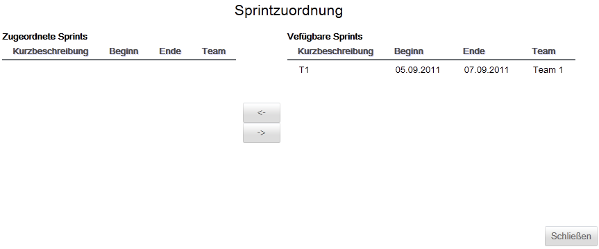

Release bearbeiten
Ein Release kann nur dahingehend bearbeitet werden, dass man dem Release verfügbare Sprints zuordnet oder bereits zugeordnete Sprint wieder entfernt.

Die Maske zur Zuordnung von Sprints zu einem Release ist zweigeteilt. Auf der rechten Seiten werden alle verfügbaren Sprints und auf der linken Seite alle bereits dem Release zugewiesenen Sprints angezeigt.
Um einen verfügbaren Sprint einem Release zuordnen zu können, muss ein entsprechender Sprint ausgewählt und mit einem Klick auf dem Release zugeordnet werden.
Um einen Sprint aus einem Release zu entfernen muss der entsprechende Sprint aus "Zugeordnete Sprints" ausgewählt und mit einem Klick auf aus dem Release entfernt werden. Der Sprint erscheint anschließend wieder unter "Verfügbare Sprints".
Created with the Personal Edition of HelpNDoc: Easy to use tool to create HTML Help files and Help web sites